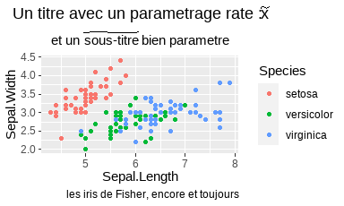
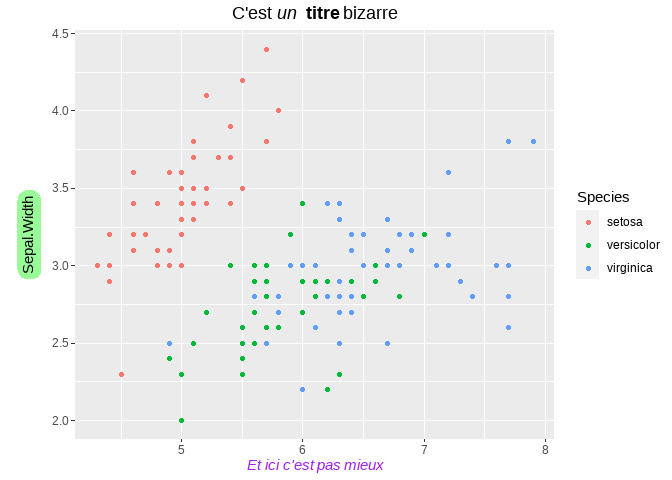

Introduction
Il y a plusieurs facons de mettre en forme les titres, a l’aide de R base ou de l’extension ggtext de ggplot2.
Mises en forme mathematiques et parametrees
La commande ?plotmathaffiche toutes les mises en formes possibles.
On en applique certaines ci-dessous grace a la fonction quote, et la fonction bquote etend les possibilites en permettant le passage de parametres.
# pour installer ggtext
# remotes::install_github("tidyverse/ggplot2")
# remotes::install_github("wilkelab/ggtext")
library("dplyr")
library("ggplot2")
library("ggtext")
# graphique avec mises en forme
ggplot(iris, aes(Sepal.Length, Sepal.Width, col = Species)) + geom_point() +
ggtitle(quote(paste("C'est ", italic("un "), bold("titre "), scriptstyle(sqrt("bizarre")))))
# le parametre x
x = "sous-titre"
# graphique avec mises en forme et evaluation d'un parametre avec bquote
ggplot(iris, aes(Sepal.Length, Sepal.Width, col = Species)) + geom_point() +
labs(title = quote(paste("Un titre avec un parametrage rate : ", widetilde(x))),
subtitle = bquote(paste("et un ", widetilde(.(x)), " bien parametre")),
caption = "les iris de Fisher, encore et toujours")
Mises en forme Mardown et html avec le package ggtext
On n’a plus besoin de la fonction quote et on peut mettre de l’italique, du gras, des couleurs, des bordures …
Pour voir toutes les possibilités du package : https://github.com/wilkelab/ggtext
marge = 8
pad = 4
theme_update(plot.title = element_markdown(),
axis.title.x = element_markdown(),
axis.title.y = element_textbox_simple(width = NULL,
orientation = "left-rotated",
margin = margin(marge, marge, marge, marge),
padding = margin(pad, pad, pad, pad),
r = unit(8, "pt"),
fill = "palegreen"),)
# graphique avec mises en forme
ggplot(iris, aes(Sepal.Length, Sepal.Width, col = Species)) + geom_point() +
ggtitle("C'est *un* **titre** bizarre") +
labs(x = "<i style='color:purple'> Et ici c'est pas mieux</i>")